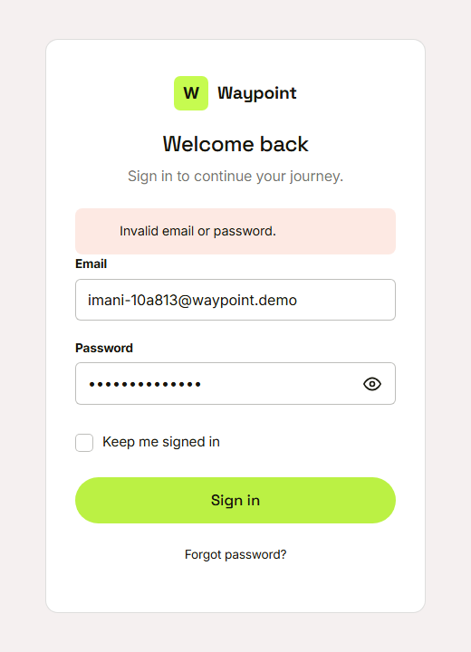
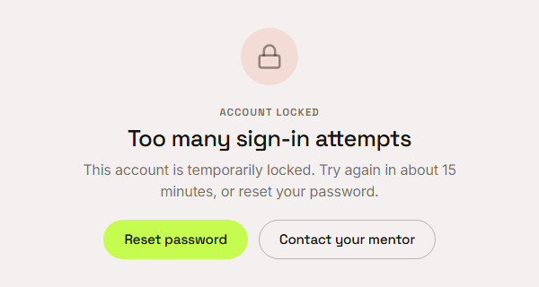
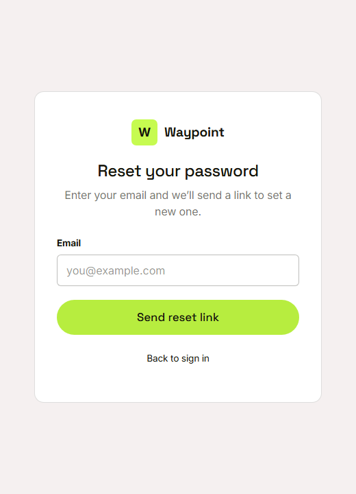

Waypoint · Video 008
Recovering a locked account
Two ways back in, and the lock lifts by itself
Wrong passwords are counted

Invalid email or password, every time
Five misses lock the account

Locked for about fifteen minutes
Reset your password

Works while the account is locked
The lock lifts by itself
- The default lock is fifteen minutes
- The program can configure it
- No one has to unlock the account
Things to remember
- Five wrong passwords lock the account
- The locked screen gives the lock time
- Reset password and contact your mentor stay open
- The lock lifts on its own, and every lockout is logged